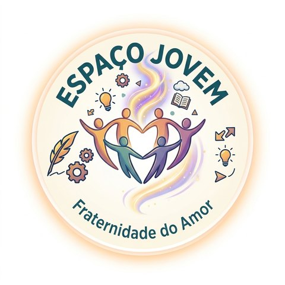

Espaço Jovem
Evangelização Espírita Infantojuvenil da Fraternidade do Amor
Educar para o amor, vivenciar o bem e fortalecer os laços familiares.
Apresentação à diretoria · novembro de 2026O projeto
Um espaço de acolhimento, estudo e convivência para crianças, adolescentes e famílias
Organizar a Evangelização Espírita Infantojuvenil da casa, articulando a Doutrina Espírita e os ensinamentos de Jesus com atividades lúdicas, artísticas, práticas, presenciais e digitais.
os princípios espíritas e os ensinamentos de Jesus, na linguagem de cada idade.
sobre escolhas, sentimentos e o jeito de conviver.
uma atitude possível no dia a dia, sem cobrança, exposição ou julgamento.
Definições gerais
Objetivo, missão e visão
Promover um trabalho contínuo que favoreça o desenvolvimento moral, espiritual, afetivo e social de crianças e adolescentes, pelo estudo participativo, pela vivência dos ensinamentos de Jesus e pela integração entre evangelizandos, famílias e casa espírita.
Educar para o amor, vivenciar o bem e fortalecer os laços familiares, oferecendo um espaço acolhedor e participativo de estudo e vivência do Evangelho à luz da Doutrina Espírita.
Ser, para as famílias da casa, um espaço de semeadura, acolhimento e esperança, onde cada criança e adolescente gosta de estar, se sente ouvido e leva para a vida o “amar a Deus sobre todas as coisas e ao próximo como a si mesmo”.
Valores e base doutrinária
O que nos guia
- Obras de referência: O Livro dos Espíritos e O Evangelho segundo o Espiritismo, de Allan Kardec.
- Materiais de apoio: orientações da Federação Espírita Brasileira para a Evangelização Espírita Infantojuvenil, adaptadas à casa.
- Sem medo, culpa ou fatalismo: nunca atribuir sofrimentos a supostos erros de vidas passadas.
- Evangelização, não prática mediúnica: com crianças, educar e acolher, sem estimular a mediunidade (O Livro dos Médiuns, cap. XVIII).
Estrutura · público-alvo
De 3 a 17 anos, em quatro grupos, e as famílias
Infância inicial
Histórias, músicas, brincadeiras, afeto e valores simples.
Infância intermediária
Narrativas, jogos, arte e atitudes do dia a dia.
Infância ampliada
Escolhas, amizade, justiça, responsabilidade e convivência.
Adolescência
Identidade, autonomia, relações, ética e participação social.
A definir com a enquete: quantas turmas abrir. A regra proposta é abrir uma turma para cada faixa com procura suficiente; com poucas inscrições, começar com duas turmas (3 a 8 e 9 a 17 anos).
Estrutura · metodologia
Um encontro, em cerca de 60 minutos
- AcolhimentoRecepção, música ou dinâmica breve.
- IntegraçãoBrincadeira ou partilha voluntária, como a boa notícia da quinzena.
- História ou conteúdoParábola, narrativa, imagem ou situação do dia a dia.
- AtividadeJogo, dramatização, arte ou roda de conversa.
- VivênciaEscolher uma atitude possível para a semana.
- EncerramentoSíntese e prece facultativa.
Organização
Como o Espaço Jovem funciona
Na sede da casa, com atividades digitais complementares.
Dois encontros por mês sobre o tema central do mês.
12 temas, avaliação formativa a cada trimestre.
Encontro bimestral de 60 a 90 minutos com pais e responsáveis.
Projeto comunitário do bem e o Festival de Arte, Amor e Fraternidade no fim do ano.
A definir com a enquete, entre os dias em que a casa já funciona.
Conteúdo programático
Sete temas, com profundidade de acordo com a idade
- Deus, criação e gratidãoVivênciaCuidar de uma planta ou evitar desperdícios.
- Jesus e os ensinamentos do EvangelhoVivênciaPraticar gentileza ou acolher alguém.
- Sentimentos, escolhas e responsabilidadeVivênciaReconhecer um erro e pensar em como repará-lo.
- Amizade, família e convivênciaVivênciaAgradecer, escutar ou colaborar em casa.
- Caridade e solidariedadeVivênciaUma ação de cuidado, respeitando a dignidade de todos.
- Imortalidade, reencarnação e progressoVivênciaEscolher uma atitude a desenvolver, sem culpabilizar o sofrimento.
- Espiritualidade e interiorizaçãoVivênciaReservar um momento para refletir sobre as próprias atitudes.
Conteúdo · planejamento anual
A trilha do ano: um tema por mês
Roteiros completos para cada idade já estão na área dos professores.
Conteúdo · além da aula
Arte, vivência e encontros on-line
A arte como expressão da alma
Artes visuais, teatro (inclusive de fantoches e de sombras), música, dança, poesia e audiovisual. Ninguém precisa ser artista nem é obrigado a se apresentar.
Vivendo o Evangelho
Cantinhos da cooperação e da expressão, mural das atitudes sem competição, oficina do bem, roda de diálogo e desafio da semana.
Atividades on-line
Evangelho em roda, clube de leitura, Cine Evangelho, oficina criativa digital, Juventude em diálogo e Família que Evangeliza.
Projeto integrador: o Festival de Arte, Amor e Fraternidade, uma vez por ano, com teatro, música, poesia e exposição, e participação voluntária das famílias.
Cuidado com cada um
Inclusão, proteção e formação
Acolher a todos
- Diferentes formas de participar: falar, desenhar, apontar ou só observar.
- Rotina previsível e ajustes sensoriais.
- Sem exigir laudo; a casa não diagnostica.
Proteger
- Sempre dois adultos por sala.
- Regras de entrada, saída e entrega.
- Dados e imagens protegidos; autorização dos responsáveis.
Formar a equipe
- Formação mensal: doutrina, desenvolvimento, metodologia e inclusão.
- Planejamento e troca de planos de aula.
- Avaliação formativa, sem classificar ninguém.
Construído a muitas mãos
Ouvir antes de decidir
—
ideias enviadas pelo grupo até agora
Objetivo: reunir sugestões de conteúdo, atividades, tarefas e organização antes de fechar o programa. Qualquer pessoa sugere e apoia as ideias dos outros; muitas já estão no projeto.
moocamor.duckdns.org/espacojovem/ideias
Objetivo: decidir com números, não com suposições.
- Quantas crianças e jovens, e de que idades: define as turmas.
- Dias e horários: entre os dias em que a casa já funciona.
- Temas e atividades que mais atraem.
- Quem pode ajudar como voluntário.
Respostas reservadas: a equipe vê só números e sugestões, sem identificação.
Pontos em aberto
O que ainda está a definir
Opções na enquete
- Terça, 14h às 16h
- Terça, 18h30 às 20h
- Quarta, 18h30 às 20h
- Sábado, 9h às 11h30
- 1º domingo do mês, com o PET Fraterno
Coincidir com os trabalhos da casa permite que a família venha junto.
Quantas turmas abrir
Depende do número de inscritos em cada faixa de idade. Com pouca procura, começamos com duas turmas: 3 a 8 e 9 a 17 anos.
Sala e recursos
Espaço físico para as turmas, materiais simples de papelaria e arte e o calendário anual, de acordo com o que a casa puder disponibilizar.
Equipe · proposta
Organograma sugerido
Proposta inicial, será revisada com a equipe e a diretoria. Contorno tracejado: participa das duas equipes.
Implantação
Linha do tempo
- Novembro de 2026Apresentação
Proposta apresentada à diretoria para apreciação e aprovação.
- Novembro e dezembro de 2026Enquete
Famílias e jovens respondem: idades, turmas, dia e horário, interesses e voluntários.
- Dezembro de 2026 a fevereiro de 2027Preparativos
Definir turmas e horário, formar a equipe, preparar planos de aula e materiais, inscrições e orientação aos pais.
- 2ª quinzena de fevereiro de 2027Início
Primeiro encontro do Espaço Jovem: “Acolhimento e amizade”.
Encaminhamento
O que pedimos à diretoria
- Apreciar e aprovar a proposta.
- Confirmar a coordenação e a equipe.
- Disponibilizar espaço e recursos possíveis.
- Autorizar o calendário anual.
- Apoiar a formação dos evangelizadores.
- Incentivar os encontros com as famílias.
- Acompanhar a implantação e a avaliação.
Que a evangelização seja um espaço de semeadura, acolhimento e esperança, no qual cada criança e adolescente encontre oportunidades para aprender, conviver, criar, servir e crescer à luz dos ensinamentos de Jesus e dos princípios da Doutrina Espírita.
moocamor.duckdns.org/espacojovem